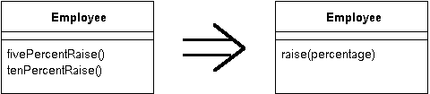

Parameterize Method
Several methods do similar things but with different values contained in the method body.
Create one method that uses a parameter for the different values.

Corrections
Clarifying the Mechanics
I've since (after a suggestion from Prof Kahlbrandt) found better mechanics for this refactoring (changes are in bold)
Create a parameterized method that can be substituted for each repetitive method
Compile
Replace the body of one method with a call to the new method
Compile and Test
Use Inline Method on the old method
Repeat for all the methods.
Contributors
For more information see page
283
of Refactoring
| Refactoring Home | | Alphabetical List |